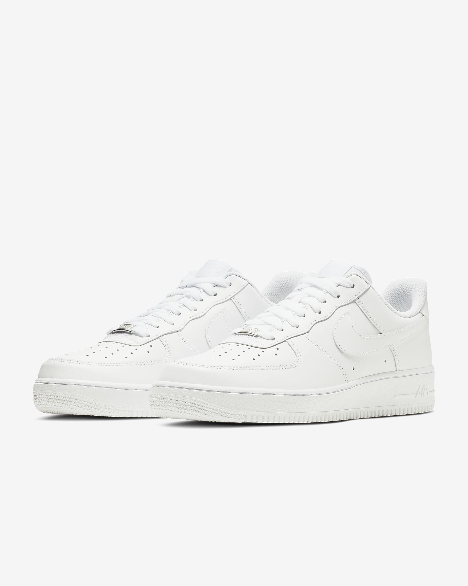
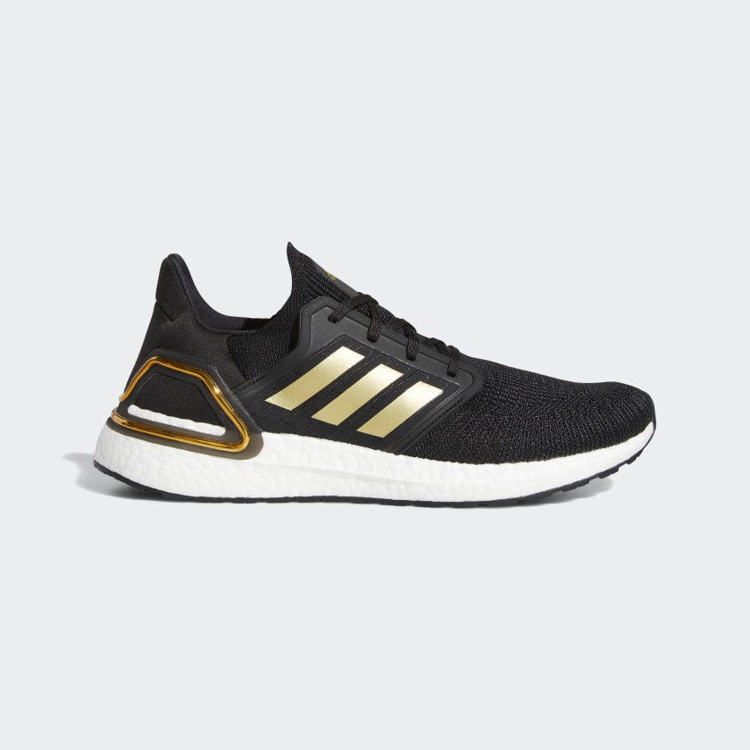
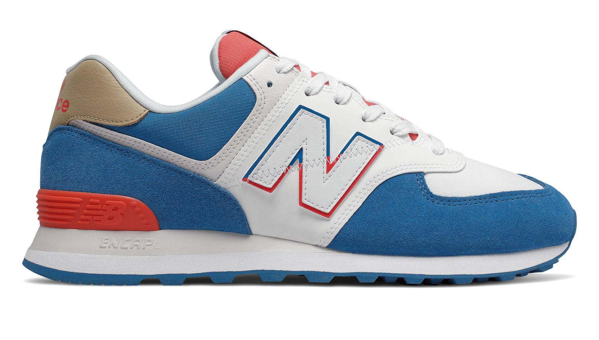
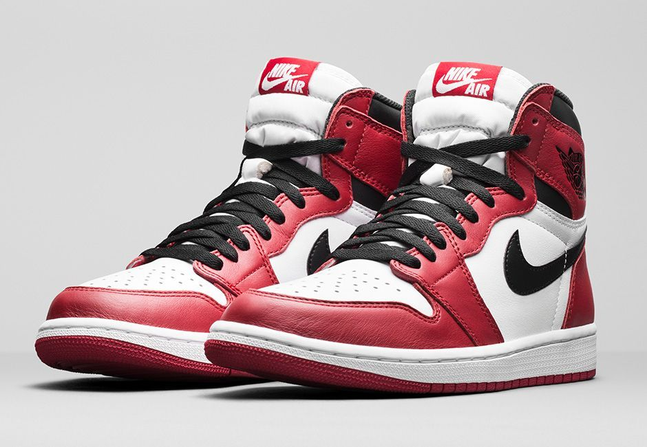

Basic Shoes
Many people have different interpretations of what basic mean. Using Urbandictionary.com, Basic means "Only interested in things mainstream, popular, and trending." Using this, you can probably tell what I mean by Basic Shoes. BUUUUTTTTT, this will not be the definition I will be using. Basic shoes on my page just means what the most popular shoe of each brand is. This will stop all of the people who wear "basic" shoes mad at me for calling them out.
Nike Air Force 1s

Air Force 1s have been here since 1982. Why is it so popular you may ask? First of all, it is so comfortable. In the sole of the shoe, there is an air unit. An air unit is basically air enclosed inside a sealed bag that is placed in the shoe for comfort. So technically, you are walking on "air". Secondly, they are white. Think of it as a white canvas. Some people like the clean slick look with the white AF1s. Others like it because it provides them a chance to do whatever or paint whatever they want on them and wear them around. Its a shoe of possibilities. Prices for these shoes have been pretty consistent over the years. It is one of the only popular nike shoes that has been kept under 100 US Dollars. I am currently thinking of getting some of these myself so I can draw on them and also finally get my first pair of completely white shoes. Haha!
If you want to have a look or want to buy it because my marketing skills are impeccable: buy it here!
Adidas Ultraboosts

The ultraboost line from adidas is of their most successful kinds of shoes. Adidas unveils a new Ultraboost design every year around this time. This was their model from last year, the Ultraboost 20s. You can go on adidas's web page to look at its history. They are pretty expensive at the moment because the bottom of the shoe is real rubber that is used for car tires. Why are they so popular? It is in the name, Ultra "boost". Boost is one of adidas main technological innovations for their shoes. Boost is the stuff you see in the bottom of the shoe, the white part. Its plastic pellets that are melted down and then fused together to form the bottom of ultraboost shoes. These melted pellets form one of the best cushioning systems on the market at the moment. Boost is one of the closest comparisons we can get to "walking on clouds" as of right now. I just recently got my first pair of the series and they are wonderful.
If you would like to take a look or buy it because, again, my marketing skills are absolutely amazing: buy it here!
New Balance 574s

The New Balance 574s hold a very special place in my heart. It is one of my all time favourite shoes. I had a pair of these shoes since Grade 11 in High School (Junior in High School). After wearing it for almost 3 years, Corona made me come back to Hong Kong to stay with my parents once again. Seeing how worn down it was (tears and holes everywhere), my mother thought she was making the right choice by sending it to the garbage bin, into the dark abyss of nothing. My dreams of wearing them until they were at the end of their life (and then framing them up) went poof right there in front of my eyes. Thinking about them just laying on a garbage patch somewhere, wasting away staring at the empty sky, breaks my heart :'(. Why are they so popular among society? I actually don't really know but I know they are very very very comfortable. It may not have the best tech on the market, but they are magical.
Currently the shoes in the picture is not available (Split Sail Series), but if you wanna go learn more about the shoe and see some other colourways: click here!
Air Jordan 1s

This shoe is one of the rarest shoes in the world. If it releases, it is gone in a blink of an eye, so right now nike is selling these at the moment. Jordan is a brand broken off from Nike named after a all time great of baskteball, the one and only Michael Jordan. This was one of the first signature shoes he wore in an NBA game. The first shoe was actually a full black and red Air Jordan 1 but he was told not to wear them again because there was not enough white on it. HAHA! This shoe is increasingly popular at the moment. Why you may ask? because of all the peeps on Tik Tok. It used to be hydroflasks and scrunchies. But now they have hijacked another accessory, Air Jordan 1s. These shoes dont really have tech to make them super comfortable or anything. It is popular because of all the hype and people think it looks cool.
If you want to have a look and appreciate the shoes: click here. You can search for other colourways on the nike website, or if you really want the shoe or feel like you wanna buy a fellow classmate a christmas present ;) by buying one of these, you can go ham on google.